Towards Relational Design (from Walker Art Center blog)
Andrew Blauvelt
Walker Art Center (2008)
See original publication here.
Towards Relational Design (Walker Art Center blog)
by Andrew Blauvelt at 12:27 pm 2008-11-10
The following is extracted from a series of lectures about relational design practices. A related article can be found at Design Observer.
A seemingly random selection of projects from various design fields with an underlying thread:
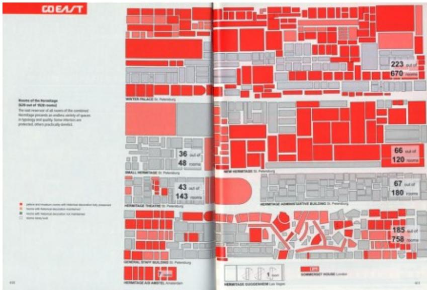
An expansion strategy for the Hermitage Museum in Russia simply annexes the surrounding government-owned buildings in St. Petersburg, increasing the available space for objects from 629 to 1928 rooms.
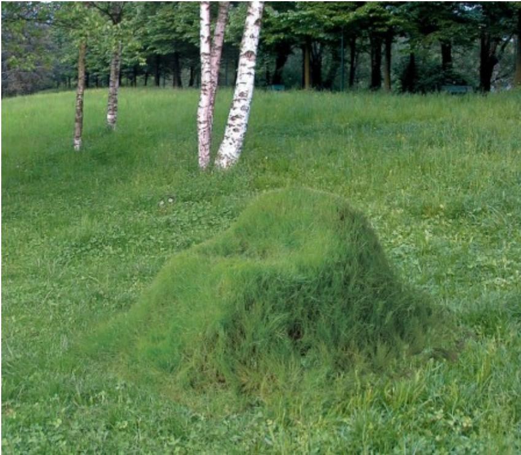
A chair made of grass must be grown and then trimmed and watered by its owner in order to remain functional.
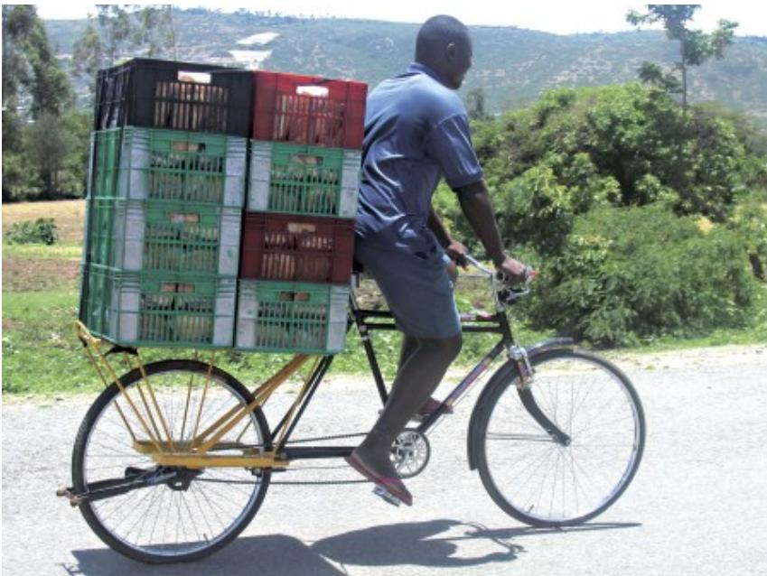
A worldwide group of bicycle enthusiasts borrow the open source model for redesigning and modifying inexpensive passenger bikes for transporting cargo in developing countries.
A typeface designed for a city alters its weight and appearance based on changes in the reported air temperature.
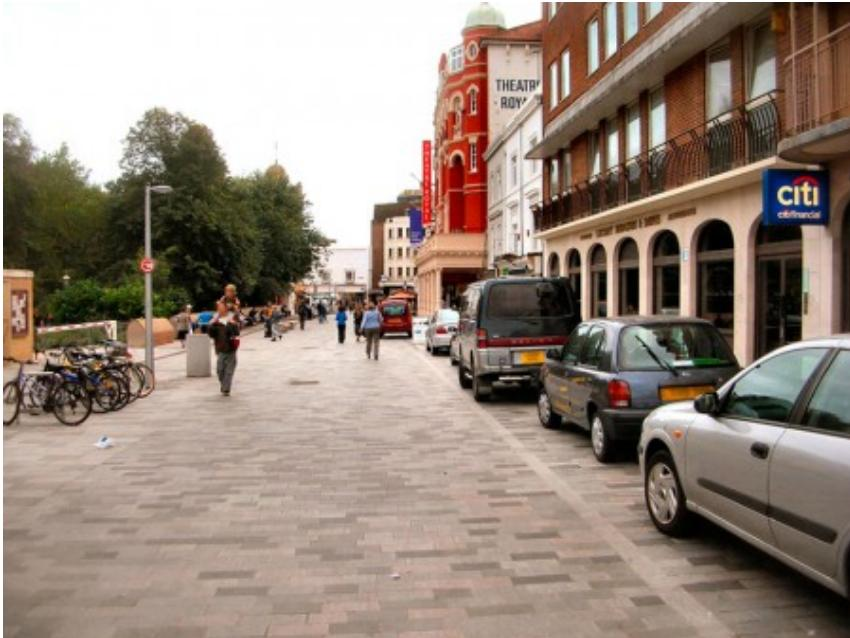
A Dutch city removes all of its traffic markings and signage in order to reduce collisions between motorists, bicyclists, and pedestrians by increasing awareness among those sharing the roadway.
A pavilion on a lake containing thousands of jet nozzles adjusts to atmospheric conditions and dispenses a continuous mist around itself, the resulting fog both conceals and reveals the structure: a scaffolding with no "real" building.
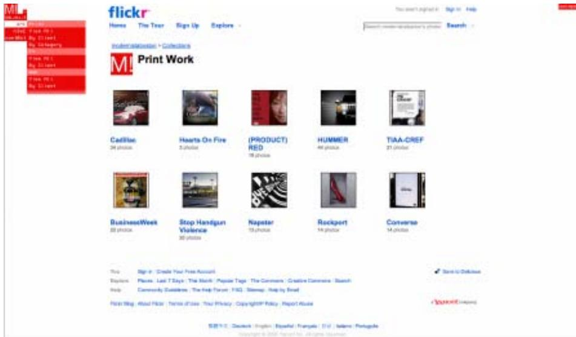
An advertising company launches its new “website,” which exists as a small navigation bar overlaid on any referencing page, directing users outward to preexisting forums such as Flickr and MySpace for much of its content.
THREE PHASES OF DESIGN
The history of modern design can be viewed in three successive phases, moving from form to content to context; or, in the parlance of semiotics, from syntax to semantics to pragmatics.
This third phase of design—which could go by several names including relational, contextual, and conditional design—follows and departs from twentieth-century experiments in both form and content, which have traditionally defined the spheres of avant-garde practice. Relational design is preoccupied with design’s effects, extending beyond the form of the design object and its attendant meanings and cultural symbolism. It is concerned with performance or use, not as the natural result of some intended functionality but rather in the realm of behavior and uncontrollable consequences. It embraces constraints and seeks systematic methodologies, as a way of countering the excessive subjectivity of most design decision-making. It explores more open-ended processes that value the experiential and the participatory and often blur the distinctions between production and consumption.
Some examples of design as they move from form to content to context:
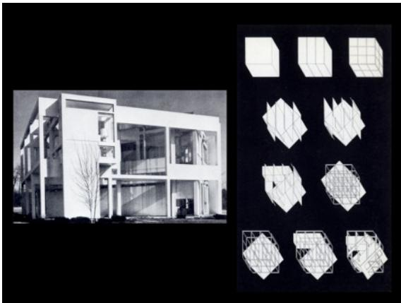
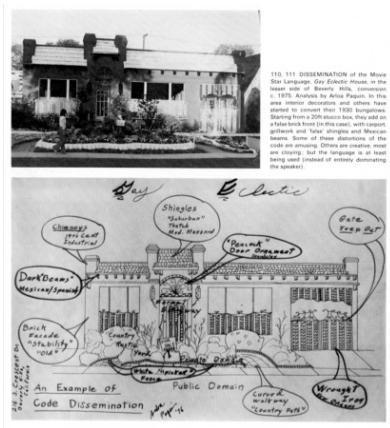
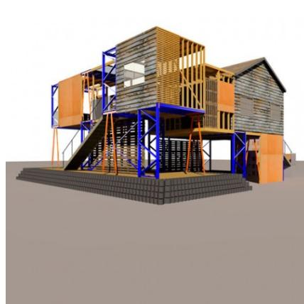
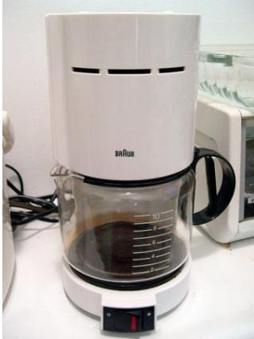
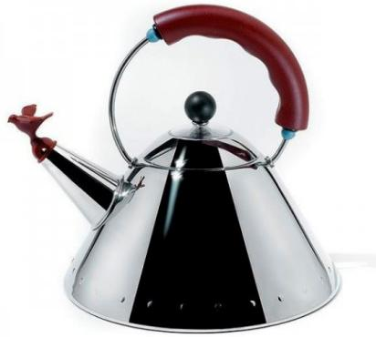
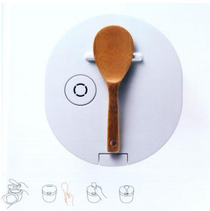
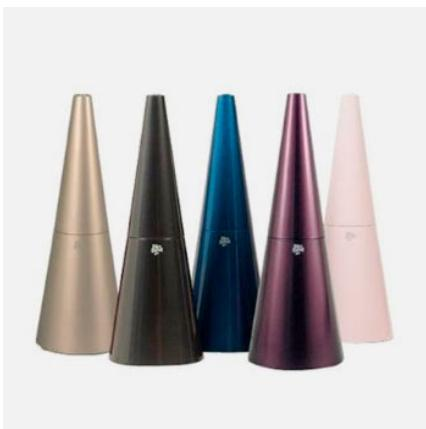
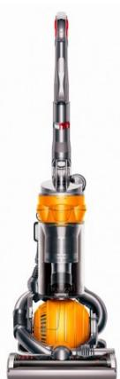
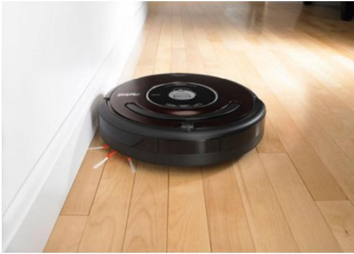
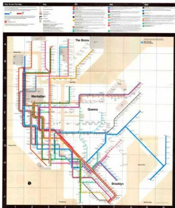
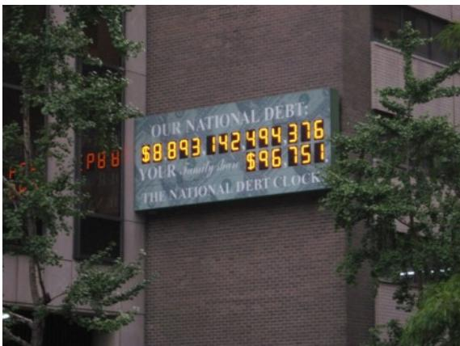
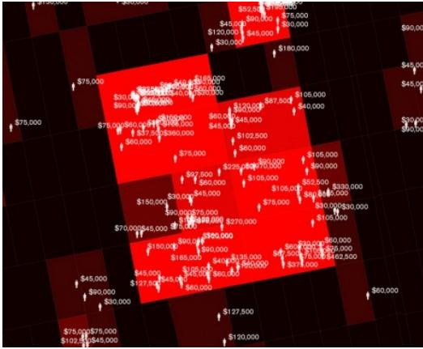
CHARACTERISTICS OF RELATIONAL DESIGN
| SYNTAX FORM | SEMANTICS CONTENT | PRAGMATICS CONTEXT | |
|---|---|---|---|
| ROLE | DESIGNER | AUTHOR | EDITOR |
| PRODUCER | CONSUMER | PROSUMER | |
| PHILOSOPHY | STRUCTURALISM | POST-STRUCTURALISM | PRAGMATISM |
| POPULAR | VERNACULAR | QUOTIDIAN | |
| CULTURE | ICONIC | IDIOMATIC | PROSAIC |
| AESTHETIC | CULTURAL | SOCIAL | |
| LOGIC | FORMAL | SYMBOLIC | PROGRAMMATIC |
| LINEAR | CYBERNETIC | NETWORK | |
| ITERATIVE | VARIABLE | GENERATIVE | |
| INFINITE FORMS | VARIABLE INTERPRETATIONS | CONTINGENT SOLUTIONS |
In relational design, the role of the designer is closer to that of an editor or a programmer, not an author but an enabler, while the consumer is recast as a more creative agent (in the guise of the designer, DIY-er, hacker, or “prosumer”). It prefers pragmatism over post-structuralism, or Dewey over Derrida, and the prosaic and banal over exotic vernaculars. It is governed by social logic and the network culture of the many to the authorial culture of one. It embraces generative systems over formal iterations and contingent solutions to variable interpretations.
Some examples from one strand of the diagram: open-ended processes and generative systems.
OPEN-ENDED PROCESSES AND GENERATIVE SYSTEMS
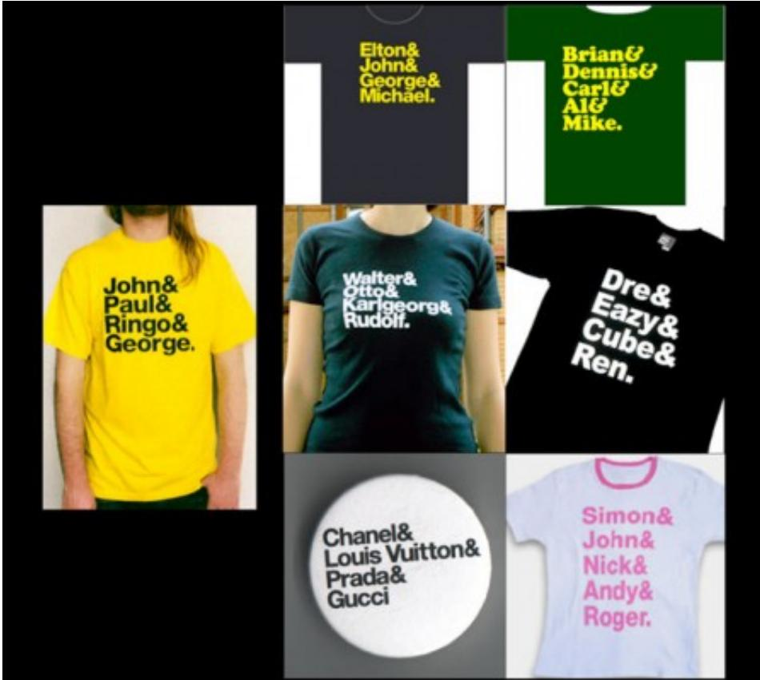
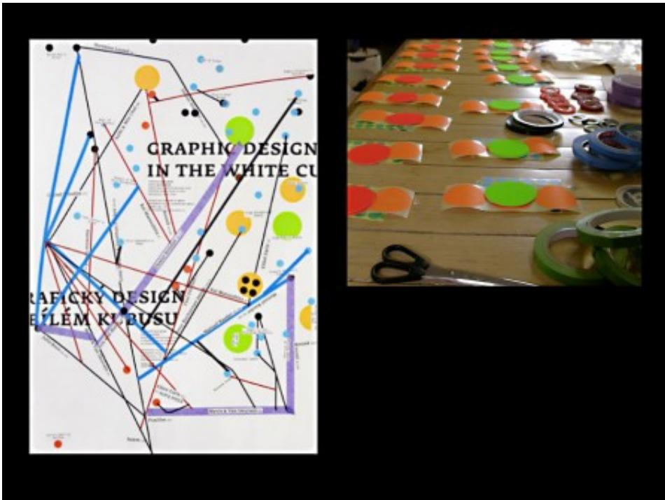
based instructions for participants. Graphic Design in the White Cube exhibition, 22nd International Biennale of Graphic Design Brno, 2006.
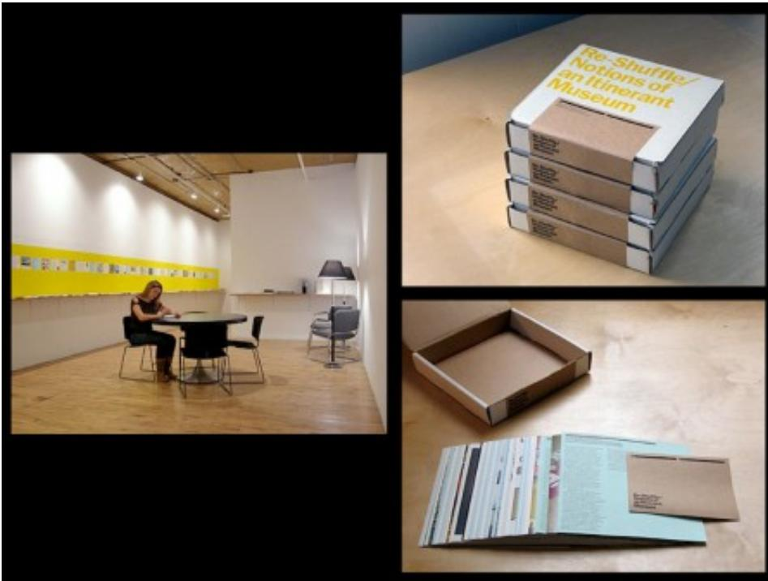
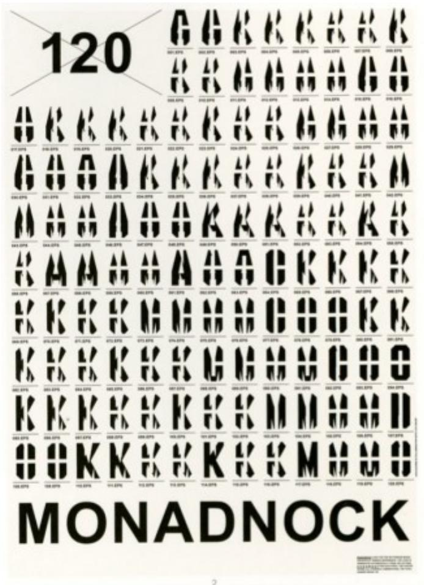
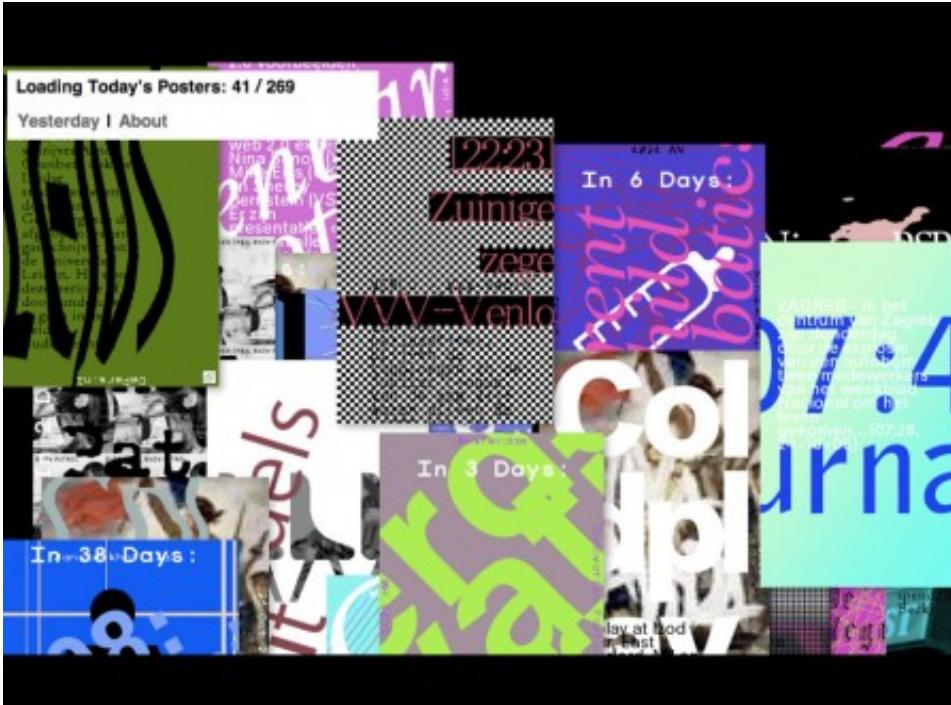
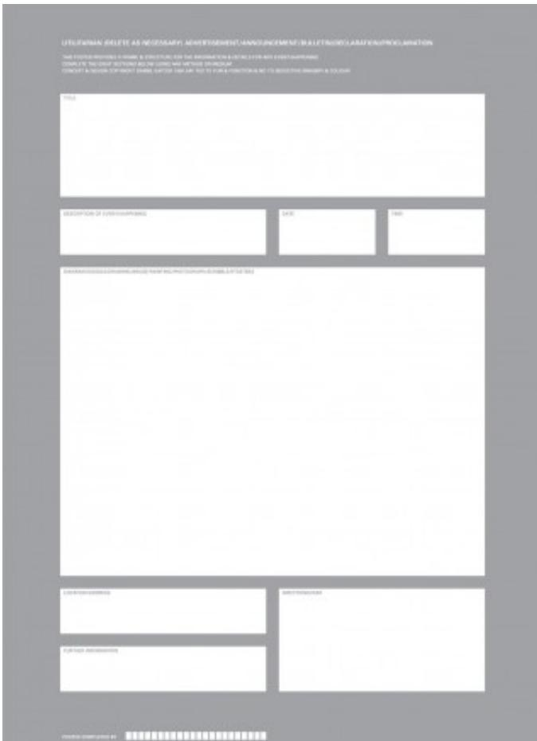
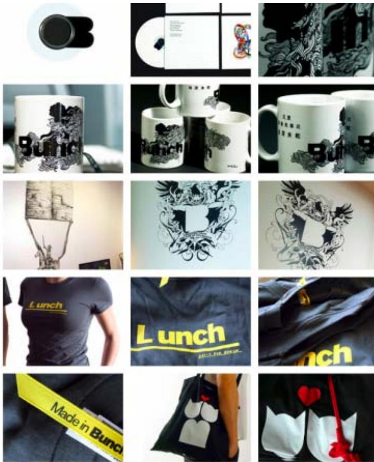
RELATIONAL DESIGN...
• is not a movement or a style, per se, but rather a way of understanding, exploring, and reexamining the role of design and designers in the lifecycle of the artifacts that it produces.
• can be seen as a method or approach for the generation of form (i.e., design).
• represents a diverse range of practices across a variety of design fields and that diversity coupled with a more process-oriented approach means that common stylistic traits will not reveal such tendencies.
• although relational design is emergent with the advent of interactivity and connectivity in the digital realm, it is not limited to zeros and ones. However, it often uses such metaphors as an operational procedure.
• embraces constraints and conditions as opportunities not obstacles. It tends toward the reduction of subjectivity in the design process or transfers the subjective to others in the network of relationships.
• is only really complete within the confines of its immediate environment or context.